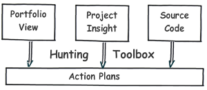

|
Wszystko w jednym
|
|
SonarQube jest otwarto-źródłową platformą do zarządzania jakością kodu. Pokrywa 7
osi jakości kodu:
|
 |
| Rozszerzaj
wtyczki
|
| By
obsłużyć nowe języki, dodać nowe silniki reguł lub zaawansowane przetwarzanie metryk
można wykorzystać elastyczny mechanizm rozszerzeń.
Jest już dostępnych ponad 50
wtyczek.
|
| Obsługiwane
języki
|
| Ponad
20 języków programowania jest obsługiwanych za pomocą
rozszerzeń wliczając języki Java, C#, C/C++, PL/SQL, Cobol, ABAP…
|
|
|
| W trzech kliknięciach |
| SonarQube
posiada skuteczny sposób nawigacji. Znalazł kompromis pomiędzy widokiem
wysoko-poziomowym, kokpitami zarządczymi, mechanizmami porównawczymi w zmian czasie
oraz narzędziami wykrywania defektów. To umożliwia szybkie poznanie projektu oraz
jego komponentów, które posiadają dług techniczny, by obrać plan działania.
|
|  |
| Jakość jest w
centrum uwagi
|
|
SonarQube jest systemem webowym. Reguły, powiadomienia, progi, wykluczenia,
ustawienia… mogą być konfigurowane on-line. Wykorzystując zebrane dane nt. projektów
SonarQube umożliwia łączenie metryk oraz porównywanie ich z danymi historycznymi.
|
|